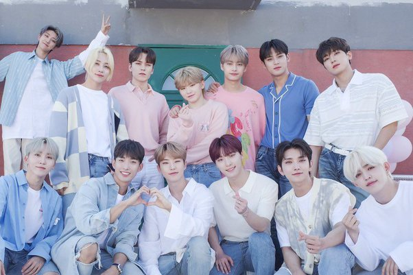

Seventeen (Korean: 세븐틴; stylized in all caps or as SVT) is a South Korean boy band formed by Pledis Entertainment. The group consists of thirteen members: S.Coups, Jeonghan, Joshua, Jun, Hoshi, Wonwoo, Woozi, DK, Mingyu, The8, Seungkwan, Vernon, and Dino. Seventeen has conquered a large audience since its debut and has grown into an internationally recognized K-Pop group with signature music and performances.
The group debuted on May 26, 2015, with the extended play (EP) 17 Carat,[2] which became the longest-charting K-pop album of the year in the US[3] and the only rookie album to appear on Billboard's "10 Best K-Pop Albums of 2015" list.[4][5] Seventeen has released four studio albums, twelve EPs and three reissues.
Learn more >>> 